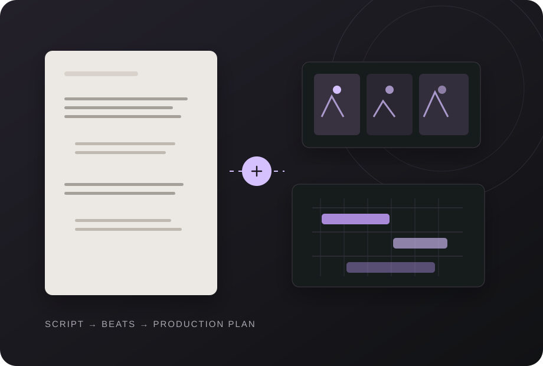
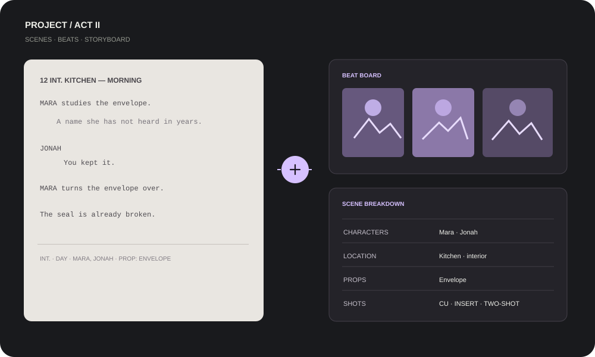
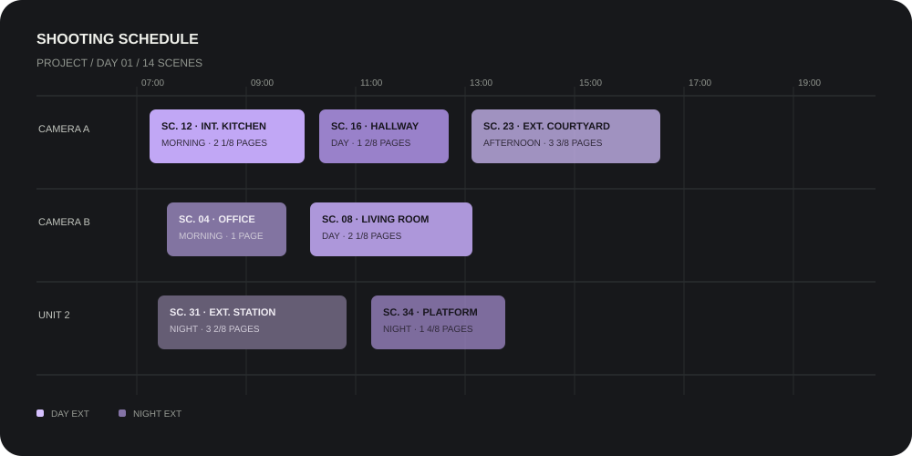

A SCRIPT BECOMES A SHOOTING PLAN
Start at the page. Stay connected.
ScreenplayX is organized around the idea that a scene should stay linked to the story beat, visual plan and production decisions made from it.

The project path
Four stages, one working database.
The script remains the backbone of the production plan. Build other views from its scenes and carry those links forward as the project changes.
- WriteDraft scenes with screenplay formatting and narrative guide overlays.
- VisualizeMap the beats, attach references and storyboard the moments.
- PlanBreak down each scene and document shots, talent, props and locations.
- ScheduleArrange the shoot and generate planning reports and call sheets.

One example: the envelope scene
A scene can carry its context forward.
- Write the sceneDraft the scene and let formatting stay consistent while you focus on story.
- Connect a beatPlace the scene's narrative moment in a beat board and refine the sequence around it.
- Board the visualsAttach frames, lighting thoughts, and visual references to the scene.
- Plan its productionTrack characters, locations and props; add angles, lenses and movement to the shot plan.
Then group scenes for the shoot
Plan the day around production logic.
Arrange scenes across a shooting schedule, account for cast and location constraints, and review warnings before exporting reports and call sheets.
- Spot incomplete informationIdentify missing location data before it becomes a scheduling surprise.
- Check cast availabilitySurface a talent double-booking while reviewing the schedule.
- Reorder the dayUse a stripboard-style schedule to group scenes for production.

A native desktop workflow
No web-app wrapper around your script.
- Desktop-first interactionScreenplayX is built as a native desktop suite with split layouts for script, boards and planning views.
- Local project storageProjects use a local database rather than a cloud-hosted script repository.
- Export production documentsTurn the schedule into reports and call sheets when the project is ready to move to set.
Next
Discover the tools behind each project stage.
See the feature overview or learn how ScreenplayX keeps scripts and production plans private.